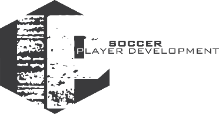

Igor Popovich
Bachelor of Science in Business Management, Faulkner UniversityMontgomery, Alabama, USA.
Languages: Portuguese, English and Spanish.
Soccer Career
~Youth Academy Sport Club Corinthians Paulista Under 16 - BRA.
~Youth Academy Uniao Recreativa dos Trabalhadores (URT) Under 18 and 21 - BRA.
~ Professional Team Uniao Recreativa dos trabalhadores (URT) -BRA
~ Artsul Futebol Clube Under 21- BRA
~Faulkner Universtiy (NAIA) - USA
~Rocket City (NPSL) - USA
~Buffalo City (NPSL) -USA
~Vermont Voltage (USL) - USA
~Assistant Coach Vestavia Hills Varsity Girls 2012/2013.
~Staff Coach Coerver Coaching 2012/2013.
~Regional Director Coerver Coaching 2013-Present.
~Faulkner Universtiy Freshman of the year. (New Comer)
~Faulkner University Team Captain 2010/2011.
~Seleted to the USL PRO Combine 2012.